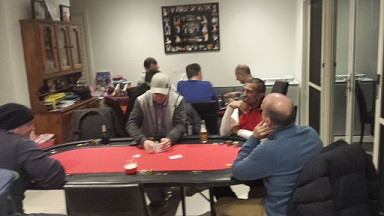
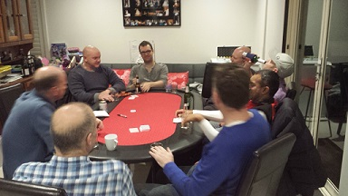
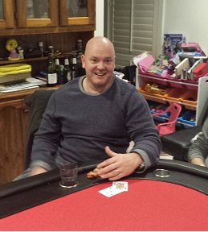

....it just keeps getting bigger and better!
|
| Position | Name | Points | Won |
|---|---|---|---|
| {{result.position}}{{positionSuffix(result.position)}} | {{result.name}} | {{result.points}} | {{result.cash | currency}} |
| Position | Name | Played | Won | Win Ratio | Ave Points | Ave Position | Points |
|---|---|---|---|---|---|---|---|
| {{$index + 1}}{{positionSuffix($index + 1)}} | {{result.name}} | {{result.played}} | {{result.won}} | {{result.won / result.played * 100| number:2}} % | {{result.points / result.played | number:2}} | {{result.averagePosition | number:2}} | {{result.points}} |
Poker returned to Mark V's for a new Square record of 11 players turning up, meaning two tables were needed to accomodate the enlarged crowd. Mark provided pre-game calorie loading of individually ordered spicy Sri Lankan curries, and players engorged the tasty dishes accompanied with a side of high brow conversations about the state of broadband and Mark L's anonymous foliage give aways.
|  |
| ........When one table is just not enough....Distributed poker.... |
With Andy and Steve known late starters, the seating allocating split the congregation over the two tables with the latecomers cards mucked and their blinds posted. The two tables initially created a more sedate atmosphere, although some of the usual suspects on one of the tables made up for it and often found themselves stopping the other tables action so they could watch.
It wasn't long before the fireworks started with Simon squaring off with pocket Kings and against Jade's pocket fours, and with a King on the river, Jade called Simon's $2,000 raise, losing a big proportion of his starting stack. Jade was playing most hands, and seemed to like the figure of $200, as this was his repeated bet on every street during one hand. Again going into a showdown with Simon, who despite eventually winning the hand was sweating on what Jade was holding, culminating in the quote "Made my bum close".
Ben took down the first two hands without even seeing a flop as his fellow players were taking their time to warm up. It wasn't long though before Paul started his chip accumulation after flopping a straight and taking a bite out of Michaels chip stack.
The first of the latecomers Andy arrived with a contented smile as his footie team had won, and then promptly won the next two hands.
There must have been something in the latecomer water as Steve then turned up eager to get right into it, and also won his first two hands. In fact, Steve was in most hands for the next hour, where as some players might fold poor starting cards, to quote Steve "I just like to see the flop". The choice of strategy seemed to be working though, as he took out Mark V's trip two's with a full house and saw his chip stack being looked on enviously by other players. It didn't always go Steves way though, as Mark L took back some of his previously lost chips with an $5,000 pot heading his way after his pocket queens beat Steve's 8's.
Soon after, Mark L took the game by the scruff of the neck and pushed Jade off a hand after shoving "All-in" after the river. Did he actually have a hand, or just a grandiose bluff? In fact, Jade was reliquinshing his chips like an over zealous charity worker, and his remaining stack headed towards Steve, after Jades 2 pair was no match for Steve's trip 5's, meaning Jade received some of his free chip up before the first break.
|  |
| ................Final table time...serious stuff.... |
It was at this point, that the super bonus player had been forgotten to be chosen, so Brian quickly wrote the names down, and Ben was the lucky random player chosen. With Ben's consistent high place finishing at previous events, meant the super bonus was on the line and had a good potential to go off.
Into the second hour and Paul took down a massive pot with Dave and Andy involved. Dave had hit trip 10's on the flop, but Paul was on a flush draw, and Andy on a straight draw. By the time the river came, both Paul and Andy had made their hands, overtaking Dave, so it was only going to end in tears. This left Andy seeking financial advice, but with none forthcoming, Andy was the first out.
With the remaining 10 players now seated on the main table, it was always going to be more difficult, as the chance of somebody holding a "monster" would increase. Steve, who had seen almost every flop, was now retreating into his poker shell and folding most of his hands, but when he did venture out of his safety zone, Simon scared him straight back into it after a strong $10,000 bet.
The host Mark V had been playing a steady game, but was heading towards the danger zone, but got back into the game after trip 5's took down a good pot against Simon's 2 pair.
Soon after, Mark L was playing it cool as he flopped a straight, and with Mark V and Simon both having two pair, Mark L took the goodies to continue his push towards the final placings.
Michael now found himself coaxing some chips in his direction after he had pocket 3's. Fortunately for him, none of the other players managed to pair the board, despite having higher cards.
Another massive hand had Mark L flopping the nut flush (i.e. holding the Ace of the same suit), and welcomed the chips with loving arms.
Jade's luck finally ran out, going out in 9th, complaining that other players weren't playing enough hands. A valid sensible strategy maybe? Another argument was that the re-buy is too expensive. This is always open to discussion, but it's set at that level to try to reward good play rather than an easy safety net to fall back on, and is more enticing for players going out really early in the evening etc.
With the blinds increasing at an alarming rate, the casualty list grew quickly with Dave finishing in 8th, and Michael following in 7th.
Steve was the next casualty as his depleted chips meant he had to get some luck to stay in the game. Unfortunately, holding 9,7 off suit, he chose the moment to call Brian's all in just when Brian received the pocket rockets (AA), and for once Steve didn't give Brian a bad beat and "crack the aces".
With the cash bubble now making it's precense known, Ben's demise eventually came, as he raised with pocket 7's. Simon called, and the flop showed a 5 to match his pocket 5's. Ben thought he was good with an overpair, and shoved all-in. Simon snapped called, and uncermoniously dumped Bubble Boy Ben out of the game in 5th place, just missing out on the cash.
|  |
| ....Ladies and Gentleman...the winner is.... |
Paul had been playing a straight bat during the night winning a few pots, but did not increase his stack enough to avoid getting burnt by the ever increasing blinds, and was next out in fourth.
The remaining three players, Mark L, Simon and Brian were salivating for the all important win. Brian gratefully received pocket aces again (3 times for the night!), and took home the pot leaving Mark L close to elimination. The poker Grim Reaper soon swung his sword and Mark L was out third, but continuing his consistent high place finishes.
Simon's chip stack was towering above Brian's, so after a few chips headed away from Simon, it wasn't long before both players were all in, with Simon taking down the remaining chips to have all of the nights $220,000 chips in front of him.
Congratulations to Simon on his first win after only six attempts, and with his second place finish at Dave's early in the season, means he leapfrogs Mark L and Ben to take out the top spot with 35 points. It's tight at the top though, with Mark L, only one point behind, and Ben another one point behing Mark L. Brian's second place finish saw him leap 7 places up the ladder to move into 4th spot with 25 points, followed closely by Dave (21), Mark V and Paul (both on 20).
A massive thanks to Mark V and his family to allow the biggest event so far to take place, and with half the season completed, it's shaping up to be a intriguing finish to the rest of the season.
See you at the next event!